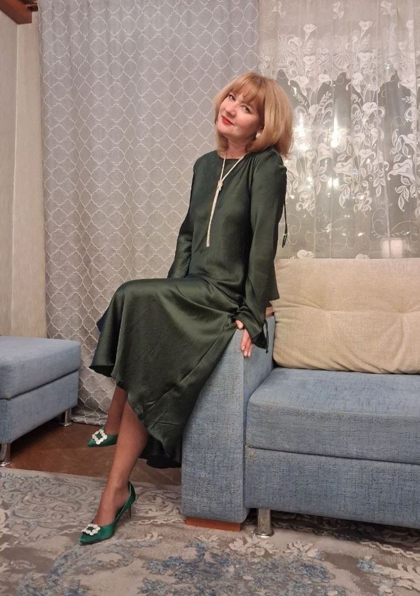
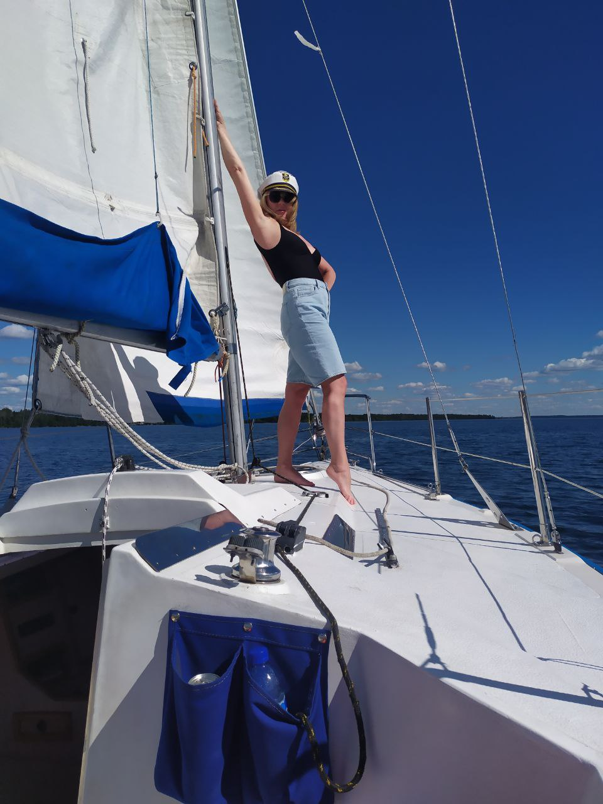

Профессиональный и жизненный путь
Городницкая Наталья Александровна — преподаватель химии и биологии в Юридическом колледже Белорусского государственного университета. Родилась в 1973 году в Минске. Окончила биологический факультет БГУ по специальности «биолог, преподаватель биологии и химии».
✨ Легко и весело училась в БГУ. Проходила практику на биостанции «Нарочь», занималась рекреационной деятельностью — дипломная работа была связана с пляжами озера Нарочь. В студенчестве полюбила биологию, химия была «попутной» дисциплиной, что позже определило её педагогический стиль.
🎓 Дополнительное образование: закончила Международный государственный экологический институт имени А. Д. Сахарова по специальности «эколог-эксперт, медицинская экология».
🏫 Школьные годы: училась в Средней школе №51. Успеваемость «хорошо и отлично», училось легко, почти без труда. Любимый предмет — физкультура, активно участвовала в спортивной жизни.

🌿 Детство & яркие воспоминания
Прекрасное детство: часто ездила к бабушке в Пружаны. Дважды была в лагере: в Крыму и Астрахани. Лучшие воспоминания — дружба, приключения, южные берега. Школьная жизнь была наполнена легкостью и тягой к знаниям, особенно к естественным наукам.
🎶 Окончила музыкальную школу по классу фортепиано. Хобби — танцевать, что осталось с ней на всю жизнь.
⚡ Профессиональное призвание
1 марта 2006 года пришла работать в Юридический колледж БГУ — пригласили знакомые биологи. Несмотря на нюансы, сразу увидела себя в профессии преподавателя. Работа нравится до сих пор. «Биология — моя страсть, а химия идёт с ней рука об руку». По статистике 9 из 10 учащихся колледжа называют Наталью Александровну своим любимым преподавателем.
❤️ Из отзывов: «Невероятные человеческие качества — юмор, справедливость, открытость, добродушие, эстетичность и собранность».
🎓 Награды & Признание
- Благодарность директора Юридического колледжа БГУ, октябрь 2010
- Благодарственное письмо ректора БГУ, 2011
- Грамота директора Юридического колледжа БГУ, октябрь 2015
- Благодарность Белорусского государственного университета, октябрь 2018
📚 Научно-педагогическая деятельность
Наталья Александровна активно занимается учебной и воспитательной работой, внедряет интерактивные методы. Регулярно участвует в республиканских и международных конференциях.
📖 Публикации и конференции
- Международная конференция (2006) — «Ток-шоу как метод самостоятельной работы студентов».
- Республиканская конференция (2008) — «Биология в юриспруденции».
- Республиканская конференция (2011) — «ДНК в судебно-геномной экспертизе».
- VIII конференция «Успешен тот, кто творит» (Брест, 2015) — «Изучение особенностей отпечатков пальцев человека».
⭐ Отзывы учащихся
Арина К.
«Наталья Александровна — мой любимый преподаватель. В ней собраны множество важнейших профессиональных качеств: ответственность, собранность. Позволила понимать химию и биологию намного лучше, чем в школе. Также отмечу человеческие качества — юмор, справедливость, честность, открытость, добродушие. А ещё Наталья Александровна очень эстетичный человек — пример с неё должен брать каждый!»
Виктория Ж.
«Добрая, отзывчивая, всегда поддержит. Её уроки — это маленькие открытия. Настоящий педагог с большой буквы, спасибо за интерес к биологии!»
Статистика колледжа
9 из 10 студентов называют Наталью Александровну любимым преподавателем.
👨👩👧 Семейная история
🏡 Родительская семья
Папа — биолог, возможно, именно от него передалась любовь к естественным наукам. Мама — историк. Домашняя атмосфера способствовала разностороннему развитию.
✨ Легко и весело в БГУ
Этот настрой Наталья Александровна передаёт студентам, делая лекции живыми и запоминающимися.

🏃♀️ Спортивная юность & активный отдых
Средняя школа №51 стала местом, где Наталья проявила себя не только в учёбе, но и в спорте. Любимый предмет — физкультура! Ездила на различные соревнования по прыжкам и метанию. Также бегала спринт и марафон — выносливость и скорость были её сильными сторонами.
🏐 Активно играла в волейбол, ходила в секцию по волейболу при школе. Командный дух и любовь к движению остались на всю жизнь.
🎹 Музыкальное развитие
Закончила музыкальную школу по классу фортепиано. Игра на фортепиано дисциплинировала, развивала чувство ритма и гармонию.
💃 Хобби — танцевать. Танцы остаются любимым способом отдохнуть и поднять настроение.
🏅 Лагеря & путешествия
Дважды была в лагере — незабываемый отдых в Крыму и Астрахани. Эти поездки стали лучшими воспоминаниями детства.
⛱️ Рекреационная деятельность на пляжах озера Нарочь — дипломная работа была посвящена этой теме.
🏁 Легкая атлетика и достижения
Школьные соревнования по бегу (спринт, марафон), прыжкам в длину и метанию — закалили характер. Постоянные тренировки в секции волейбола помогли развить реакцию, что пригодилось в педагогической деятельности.
✨ «Спорт научил меня не бояться трудностей, а музыка — чувствовать красоту», — делится Наталья Александровна.